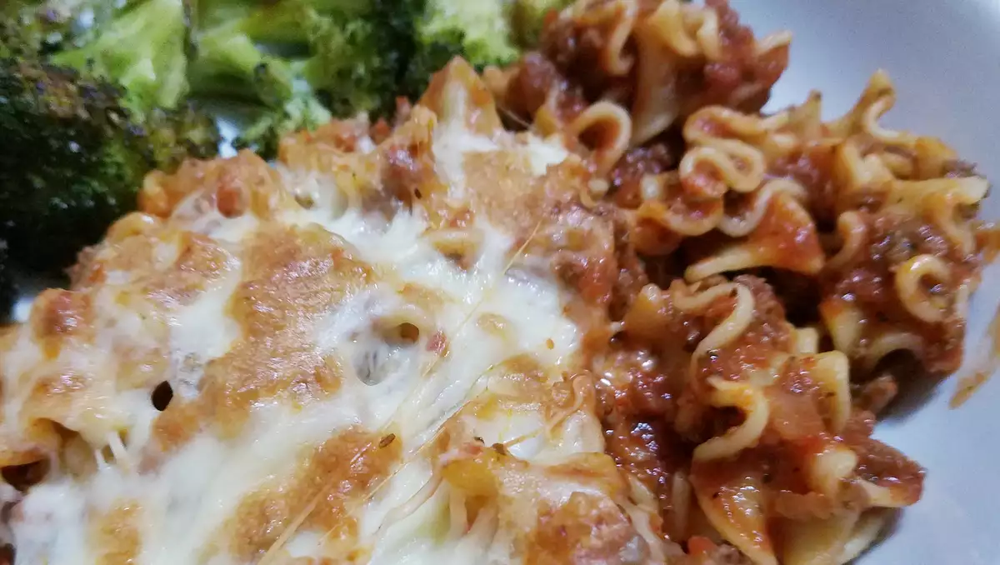

Lasagna

This no-bake skillet lasagna is made right on your stovetop and is a fast and easy alternative to store-bought hamburger mixes!
- ½ pound ground beef
- ½ (28 ounce) jar spaghetti sauce
- 1 (14.5 ounce) can diced tomatoes
- ½ onion, chopped
- 1 clove garlic, minced
- 2 teaspoons dried basil (Optional)
- 2 teaspoons dried oregano (Optional)
- 1 teaspoon salt
- 1 teaspoon black pepper
- 2 cups dried mafalda noodles
- 1 cup shredded mozzarella cheese